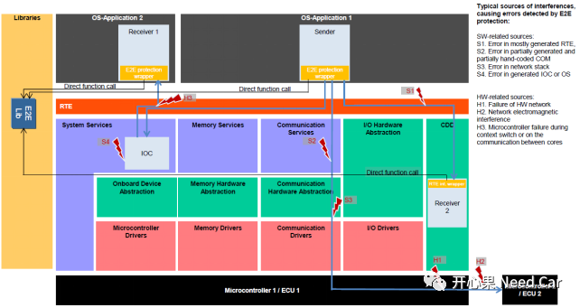
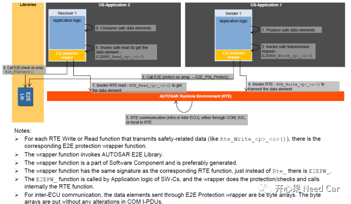
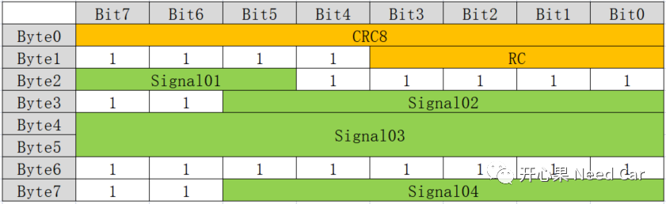
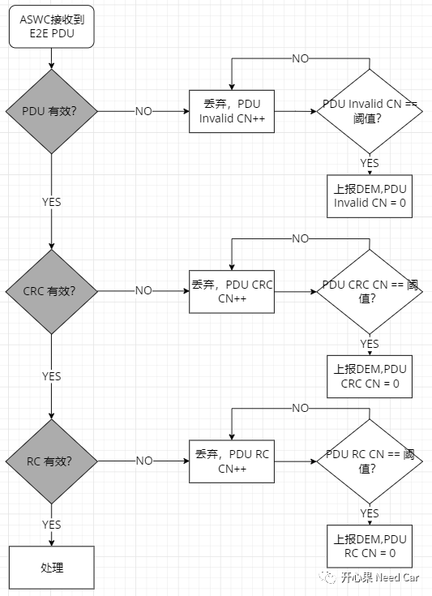

开心果 Need Car · 2022-03-07T12:06:00+08:00 · 微信原文
车圈的朋友对功能安全应该并不陌生，尤其这两年，功能安全话题的讨论相当火热。每个车圈的工程师也都能说两句，至于能说到什么程度就因人而异了。苦逼的开发工程师，是所用话题或者功能的践行者，我也不例外，本文我主要从自身的开发经验聊E2E，抛砖引玉！
目前，汽车对于我们大多数普通人，已不是什么不可企及的奢侈品了，从几万到一二十万的汽车，很多人已经可以消费的起。也可能是“物质基础决定上层建筑”，大家不仅买的起了，还更注重安全了，所以，E2E来了。
我们知道，对于一帧报文的传输来说，数据很容易被模拟和仿造，如果报文被截获，且被恶意篡改，将极大地影响车辆驾/乘人员的人身安全。
大背景我们简单的说这么多，网上很多比我说的好，不在这浪费大家时间。
来，先直观的感受下Autosar中的E2E，E2E的功能不仅适用于板级间通信（Ecu之间），还适用于核间通信。



一般在需求里会这样要求：
对于E2E报文，未使用部分填充1；对于非E2E报文，未使用部分填充0。可能就是为了区别一下。
如果项目中上了E2E，那么诊断部分的功能也会有额外的要求，为什么呢？因为要对接收到的E2E报文进行校验，这里的校验不仅仅是CRC校验，还包括RC的校验和信号有效性的校验，以此确保接收的数据是安全可靠的。毕竟进行E2E配置的报文都是注重安全性的报文，要求等级高，所以，在项目中，一个E2E报文有严格的检查时序：PDU有效->CRC有效->RC有效->处理。
注意：PDU有效实际实现就是一个PDU对应一个有效位，按照Autosar，一个信号或者信号组对应一个Bit表示其有效性，这里不妨将其看作一个信号组，说白了就是为了降低开发难度。

方法一
方法二
编写测试Capl测试脚本，脚本编写可以利用帮助中提供好的库函数计算也可以自己写，本文就是作者自己写的一套；
还可以利用Python，利用PCan或者ZLG的接口，二次开发，实现E2E Frame的模拟。
自己写时，需要对应项目的源码，直接找到源码部分，把算法移植过来用即可。本文不过的解释脚本，大家可以在此基础上改改用。
具体Capl测试脚本如下所示：
/*@!Encoding:936*/variables{/* the polynomial is 0x1D */const byte Crc_Poly = 0x1D;byte Crc_DataPtrAddr = 0x01;const byte DATAIDLEN = 2;/*DataId 0x0000.Type:uint16*/byte DataId_ValueArr[DATAIDLEN] = {0x00, 0x00};/*Start value shall be 0x00.*/byte Crc_InitValue = 0xFF;/********************** Configuration Start Info **************************/byte RC_Value_0x1F1 = 0xF0;const Msg_0x1F1_Len = 0x7;msTimer Timer_0x1F1;const byte MsgCyclic_0x1F1 = 20;message 0x1F1 Msg0x1F1 = {dlc = 8,FDF = 1,BRS = 1,DIR = Tx};byte Msg0x1F1_DataArr[Msg_0x1F1_Len] = { 0xF0, 0, 0, 0, 4, 0x04, 0};/************************ Configuration End Info ***************************/}byte CRC8_SAE_J1850_CalculateRuntime(byte data[], byte DataLen, byte Crc_Value, byte Crc_Poly){dword Crc_DataPtrAddr;byte Crc_LoopCounter;byte Crc_CalcValue;Crc_CalcValue = Crc_Value;/* see Code */Crc_CalcValue = (0xFF ^ Crc_CalcValue);/* Perform CRC calculation for each byte in Crc_DataPtr */for(Crc_DataPtrAddr = 0; Crc_DataPtrAddr < DataLen; Crc_DataPtrAddr++){/* XOR next byte of Crc_DataPtr with current CRC value. This is equivalent to calculating CRC value of* concatenated bytes */Crc_CalcValue ^= data[Crc_DataPtrAddr];/* Perform modulo-2 division, a bit at a time */for (Crc_LoopCounter = 0; Crc_LoopCounter < 8; Crc_LoopCounter++){/*If MSB is 1, CRC value is XORed with polynomial */if (Crc_CalcValue & 0x80){Crc_CalcValue = (Crc_CalcValue << 1) ^ Crc_Poly;}else{Crc_CalcValue = (Crc_CalcValue << 1);}}}/* Final CRC value is XORed ,XOR value shall be 0x00 */return (Crc_CalcValue ^ 0xFF);}void Send_PDUInfo_DataReassembly(word CanId, byte data[], byte dataLen){byte idx = 0x00;byte localCrc = 0x00;localCrc = Crc_InitValue;/* Calculate CRC for DataID */localCrc = CRC8_SAE_J1850_CalculateRuntime(DataId_ValueArr, DATAIDLEN, localCrc, Crc_Poly);/* rolling counter */data[0] = ((data[0] + 1) & 0x0F);/* fill CRC value */localCrc = CRC8_SAE_J1850_CalculateRuntime(data, dataLen, localCrc, Crc_Poly);/* Revert final XOR of CRC routine */localCrc ^= 0xFF;switch(CanId){case 0x1F1:Msg0x1F1.byte(0) = localCrc;for(idx = 0x00; idx < dataLen; idx++){Msg0x1F1.byte(idx + 1) = data[idx];}break;default:break;}}on timer Timer_0x1F1{output(Msg0x1F1);setTimer(Timer_0x1F1, MsgCyclic_0x1F1);Send_PDUInfo_DataReassembly(0x1F1, Msg0x1F1_DataArr, Msg_0x1F1_Len);}on start{Send_PDUInfo_DataReassembly(0x1F1, Msg0x1F1_DataArr, Msg_0x1F1_Len);setTimer(Timer_0x1F1, MsgCyclic_0x1F1);}
往期精彩回顾